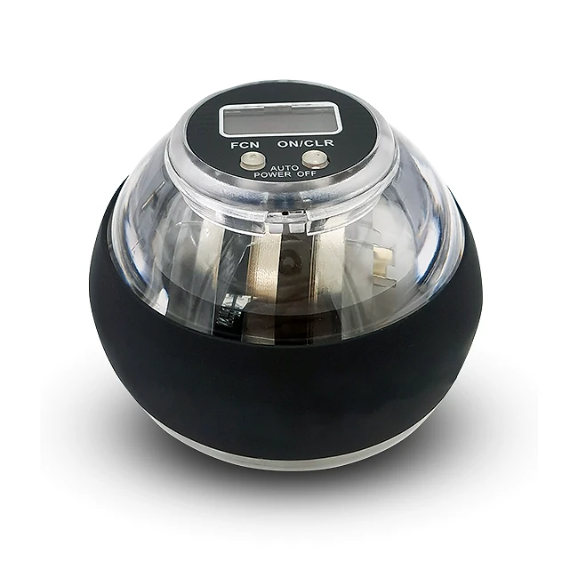
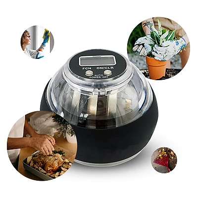

Was ist CuraBall und wie funktioniert es?
CuraBall ist ein gyroskopischer Handtrainer: eine handliche Kugel mit einem schnell drehenden Rotor im Inneren, die durch kreisende Bewegungen des Handgelenks in Schwung gehalten wird. Laut der offiziellen Website soll das Training Griffkraft und Fingerfertigkeit unterstützen, damit alltägliche Aufgaben wie das Öffnen von Gläsern, das Schließen von Knöpfen oder die Gartenarbeit leichter fallen.
Das Prinzip ist von ähnlichen Geräten bekannt, die oft als Gyroskop-Bälle oder Powerballs bezeichnet werden und seit Jahren im Sport- und Freizeitbereich verbreitet sind. Wenn Sie den Rotor mit einer Drehbewegung aus dem Handgelenk antreiben, entsteht ein Widerstand, der umso stärker wird, je schneller sich der Rotor dreht. Der Hersteller beschreibt das als automatischen, progressiven Widerstand, der sich an Ihr Kraftniveau anpasst.
Auf dem integrierten LCD-Display sehen Sie die Drehzahl. Laut Website reichen die Werte von etwa 2.000 bis 18.000 Umdrehungen pro Minute, sodass Sie Ihren Fortschritt von Training zu Training verfolgen können. Batterien oder Aufladen sind laut Hersteller nicht nötig, und das Gerät ist ohne Aufbau sofort einsatzbereit.
Die Website empfiehlt nur fünf Minuten Training am Tag, zum Beispiel beim Fernsehen oder Lesen, und betont das tragbare Design. Die Zielgruppe sind vor allem ältere Menschen, die ihre Selbstständigkeit im Alltag erhalten möchten. Laut Website haben sich bereits über 2.000 Kundinnen und Kunden für CuraBall entschieden, und die Bewertungen liegen nach Angaben des Herstellers bei 4,9 von 5 Sternen.
Zur Einordnung: Die Website spricht von „von der NASA inspirierter Technologie“ und von klinischen Studien. Das sind Werbeaussagen, für die keine Quellen genannt werden. Ein Handtrainer kann regelmäßige Bewegung unterstützen, ersetzt aber bei Erkrankungen wie Arthrose oder nach Verletzungen keine ärztliche Behandlung oder Physiotherapie.
CuraBall Funktionen
Laut der offiziellen Website bietet CuraBall die folgenden Funktionen:
Gyroskop-Rotor: sanfter, adaptiver Widerstand, der sich an die Geschwindigkeit Ihrer Handbewegung anpasst.
Automatischer, progressiver Widerstand: je schneller der Rotor, desto stärker der Widerstand.
Integrierter LCD-Zähler: zeigt die Drehzahl von etwa 2.000 bis 18.000 U/min an, mit Tasten für Funktion und Ein/Aus sowie automatischer Abschaltung.
Ohne Batterien: kein Aufladen und kein Aufbau erforderlich.
Tragbares Design: passt in eine Hand und lässt sich überall verwenden.
Das Gehäuse ist auf den Produktbildern transparent, mit einem dunklen, griffigen Ring. Detaillierte technische Daten wie Gewicht, Durchmesser oder Material nennt die Website nicht. Auf dem Display sind die Tasten „FCN“ und „ON/CLR“ sowie der Hinweis „Auto Power Off“ zu sehen.
Der Hersteller betont, dass das Training in nur fünf Minuten am Tag möglich ist und ohne Eingewöhnungszeit beginnt. Die Bewegung aus dem Handgelenk trainiert dabei Hand, Finger und Unterarm gleichzeitig. Der Widerstand wächst laut Website mit Ihnen mit, sodass jede Einheit zu Ihrem aktuellen Leistungsniveau passt.
Im Vergleich mit anderen Geräten hebt der Hersteller die Fortschrittsanzeige und den selbstanpassenden Widerstand hervor; ein solcher Vergleich ist allerdings eine Herstellerangabe.
CuraBall Anwendung
Die offizielle Website empfiehlt ein Training von etwa fünf Minuten täglich. Der Rotor wird durch eine kleine Drehbewegung angestoßen und anschließend durch kreisende Bewegungen des Handgelenks in Schwung gehalten. Je gleichmäßiger und schneller die Bewegung, desto höher die Drehzahl auf dem Display und desto größer der Widerstand.
Laut den häufig gestellten Fragen sollen Sie immer langsam beginnen und das Gerät sich an Ihr Kraftniveau anpassen lassen. Das ist ein guter Rat, besonders am Anfang: Kurze Einheiten mit niedriger Drehzahl sind sinnvoller als ein langes, anstrengendes Training.
Praktisch ist das Training nebenbei, etwa beim Fernsehen oder Lesen, wie es die Website vorschlägt. Wechseln Sie die Hände, damit beide gleichmäßig trainiert werden, und notieren Sie die Werte vom Display, wenn Sie Ihren Fortschritt verfolgen möchten.
Allgemeine Hinweise: Bei Schmerzen im Handgelenk, in den Fingern oder im Unterarm brechen Sie das Training ab. Wer Arthrose, Rheuma, ein Karpaltunnelsyndrom oder eine frische Verletzung hat, sollte vorher mit einem Arzt oder Physiotherapeuten sprechen. Halten Sie das Gerät fest, damit es beim schnellen Drehen nicht aus der Hand rutscht, und bewahren Sie es außerhalb der Reichweite kleiner Kinder auf. Laut Website schaltet sich das Display automatisch ab, wenn der Ball nicht benutzt wird.
CuraBall – Rückerstattung
Laut der offiziellen Website gilt eine 30-Tage-Geld-zurück-Garantie. Wenn Sie nicht zufrieden sind, können Sie das Gerät innerhalb von 30 Tagen nach Erhalt der Bestellung zurückgeben.
Die Rückgaberichtlinie des Verkäufers beschreibt die Bedingungen genauer. Zuerst wenden Sie sich an den Kundenservice per E-Mail; es gibt eine eigene Adresse für deutschsprachige Kundinnen und Kunden. Geben Sie dabei an, ob Sie einen Ersatz oder eine Erstattung wünschen.
Die Ware muss sich im selben Zustand wie beim Kauf befinden, unverändert und mit der Originalverpackung, und sicher verpackt sein. Zurückgeschickt wird an die Rücksendeadresse, die der Kundenservice nennt; Sendungen an andere Adressen werden laut Richtlinie abgelehnt. Für die Erstattung muss eine gültige Sendungsnummer der Rücksendung an den Kundenservice geschickt werden. Nach 30 Tagen ab Erhalt werden Rücksendungen abgelehnt.
Laut den häufig gestellten Fragen gibt es keinen kostenlosen Versand; die Versandkosten werden im Bestellvorgang je nach Standort berechnet. Für Verbraucher in der EU gilt zusätzlich das gesetzliche Widerrufsrecht. Bewahren Sie Ihre Bestellbestätigung und die Originalverpackung auf, damit eine Rückgabe innerhalb der Frist ohne Probleme möglich ist.
Verkäufer ist laut Impressum die Label Products B.V. mit Sitz in Helmond in den Niederlanden. Nach dem Versand erhalten Sie laut Website eine E-Mail mit einer Sendungsverfolgungsnummer, mit der Sie den Status Ihrer Lieferung prüfen können.
CuraBall Kundenbewertungen
-
Robert K.Verifizierter Kauf
„Ich dachte schon, ich müsste das Holzarbeiten komplett aufgeben. Dann habe ich angefangen, CuraBall abends vor dem Fernseher zu benutzen. Die Zahlen auf dem Display steigen und steigen! Jetzt baue ich wieder Vogelhäuschen.“
-
Eleonore S.Verifizierter Kauf
„Früher habe ich jede Woche gewartet, bis mein Sohn kam, nur damit er mir die Flaschen aufdreht. Nach sechs Wochen mit meinem CuraBall schaffe ich das wieder alles alleine.“
-
Margarete H.Verifizierter Kauf
„Ich koche wieder meinen Schmorbraten, den die Enkel so lieben. Dieses kleine Zähl-Display motiviert mich richtig – letzte Woche war ich schon bei 9.200 Umdrehungen!“
CuraBall – Wo kaufen?
CuraBall wird über die offizielle Website curaball-official.com verkauft. Dort finden Sie die Übersicht der Eigenschaften, die Kundenbewertungen, die häufig gestellten Fragen, einen Vergleich mit anderen Geräten und die Bestellseite. Links zu Impressum, Rückgaberichtlinie und Widerruf stehen im Fußbereich der Seite.
Gyroskop-Handtrainer gibt es in ähnlicher Form von vielen Anbietern, auch im Sporthandel. Bei Angeboten auf Marktplätzen ist nicht sicher, ob es sich um dasselbe Modell mit LCD-Zähler handelt, und die 30-Tage-Garantie des Verkäufers gilt dort in der Regel nicht. Kaufen Sie deshalb direkt beim Verkäufer.
Achten Sie beim Besuch darauf, dass die Adresse curaball-official.com lautet, und prüfen Sie im Bestellvorgang die Versandkosten, denn diese werden laut Website separat berechnet. Die Bestellseite arbeitet mit Hinweisen auf knappe Lagerbestände und zeitlich begrenzte Angebote; lassen Sie sich davon nicht drängen. Laut Website wird die Bestellung zeitnah verschickt, und nach dem Versand erhalten Sie eine Sendungsverfolgungsnummer per E-Mail. Bei Fragen zur Bestellung hilft der Kundenservice per E-Mail auf Deutsch weiter.
Um sicherzugehen, dass Sie das Originalprodukt erhalten, besuchen die meisten Nutzer die offizielle Website.
Ist CuraBall Betrug?
Nach den verfügbaren Informationen gibt es keinen Hinweis darauf, dass CuraBall Betrug ist. Das Gerät wird über eine eigene Website verkauft, und hinter dem Verkauf steht laut Impressum die Label Products B.V. aus Helmond in den Niederlanden, mit Handelsregisternummer und Umsatzsteuer-Identifikationsnummer. Es gibt eine 30-Tage-Geld-zurück-Garantie und einen deutschsprachigen Kundenservice per E-Mail.
Positiv sind die klare Rückgaberichtlinie, das einfache Funktionsprinzip, das ohne Batterien auskommt, und das Display, mit dem sich der Fortschritt verfolgen lässt.
Es gibt aber Punkte, die Aufmerksamkeit verdienen. Aussagen wie „von der NASA inspiriert“, „Reha-Technologie in Profiqualität“ und eine klinische Studie mit 82 Prozent Verbesserung werden ohne Quelle genannt. Der Vergleich mit den Kosten für betreutes Wohnen ist eine Werbeaussage. Gyroskop-Bälle sind zudem ein bekanntes Produkt, das es auch von anderen Marken gibt. Auf der Bestellseite steht außerdem einmal irrtümlich „Lumo-Therapie“, offenbar ein Rest aus einer anderen Produktseite.
Vorsicht ist außerdem bei Angeboten außerhalb der offiziellen Website geboten, denn dort gilt die Garantie des Verkäufers in der Regel nicht.
Wie bei jedem Trainingsgerät sollten Sie realistische Erwartungen haben: Ergebnisse hängen von der Regelmäßigkeit ab und können variieren. Wer die Bedingungen kennt und direkt auf der offiziellen Website bestellt, geht nach heutigem Stand kein besonderes Risiko ein.
Wer Produktdetails überprüfen oder die aktuelle Verfügbarkeit prüfen möchte, ist auf der offiziellen CuraBall-Website am sichersten aufgehoben.
